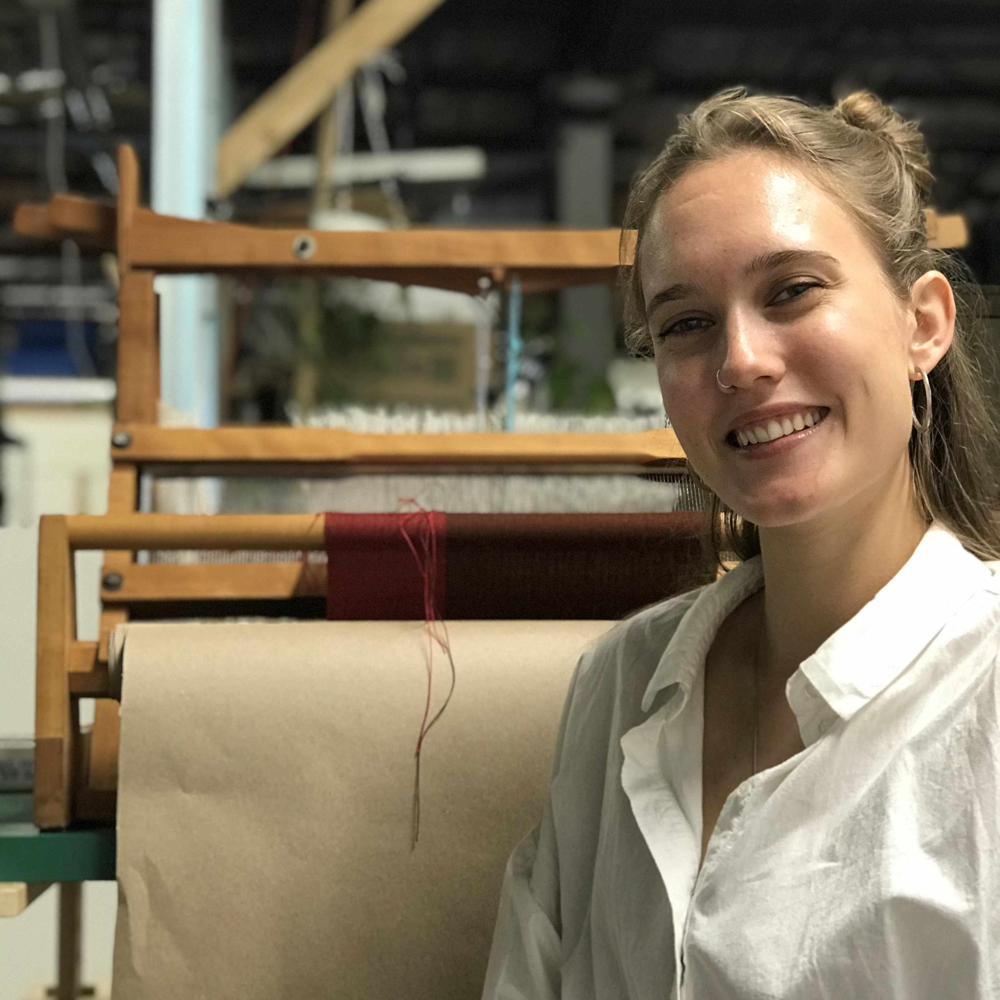
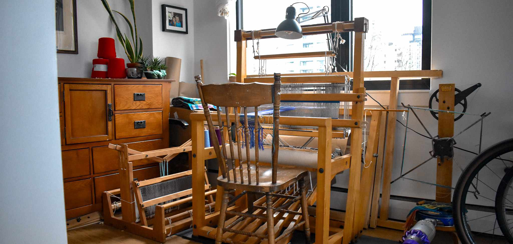

Welcome, fibre enthusiast.


Hi! I'm Maja.
- I have a floor loom instead of a dining table.
- I try to Touch Fibre every day (you can keep me accountable at that link).
- My newest loom is 50 years young.
What I'm All About.
Weaving as a way of slowing down in a world that won't stop scrolling. Seasonality. Natural fibres. The artisanal quality of handwoven textiles.
I am also a member of the Gulf Islands Arts Council and Webmaster for the Guild of Canadian Weavers. I share my work in community exhibitions and on Substack where I write about slow making, local fibres, and the quiet joy of weaving by hand.
A free pattern for subscribers.
I would love to share my Granary Dish Towels pattern with you. It is inspired by the texture of barley and wheat. Using just one shuttle, it is a quick project!
I share it as a small thank-you when you subscribe to my newsletter.
How often will you hear from me?
You'll hear from me about once per month. Some letters will be project updates or new patterns; others might be reflections from the loom or deeper dives into materials, processes, and makers I admire.
Still not sure?
I get it! Your inbox fills up fast. Here are two of my favourites for you to check out first: